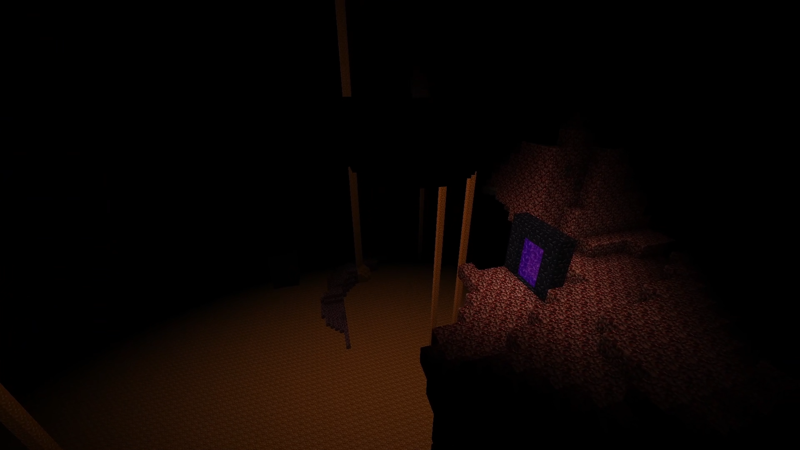

I enjoy working on many different kinds of software. In my free time I often work on one of my video game related projects. I create Minecraft mods in Java, and I make game prototypes in C++ only using essential libraries. You can read more about my favorite ones below! All of them are open source, and available on GitHub!
János Horváth
I’m a programmer with a wide range of interests from 3D graphics to machine learning.
About Me
My Projects

Minecraft Mods
My Minecraft Mods are addons to the cult classic Better Than Wolves Mod, enhancing the experience with additional content, balance changes, and quality of life improvements.